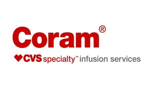
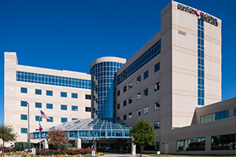
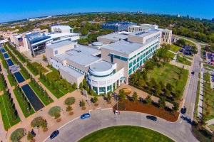

Texas Oncology
I was employed as a Senior Pharmacy Technician with Texas Oncology for roughly 4 years. My job responsibilities included but not limited to:
1. Preparation of various intravenous therapy medications.
2. Purchasing of pharmacy supplies and medications.
3. Scheduling of pharmacy medication orders.
4. Management of pharmacy policies and the maintenance of our parent company's codes of ethics and practice policies.

Coram Specialty Infusion Services
As a Pharmacy Technician, my job responsibilities included but not limited to:
1. Prepared intravenous admixtures including but not limited to: total parenteral nutrition, chemotherapy, antibiotics, iron, programmable take-home pumps and syringes.
2. Assessed the scheduling of daily orders in conjunction with Coram’s logistics team.
3. Trained new employees in the preparation of various IV compounds.

Denton Regional Medical Center
My very first Pharmacy Technician experience. Susan Dianne Blankenship, the Pharmacy Director at the time, gave me my first opportunity to become a Pharmacy Technician and allowed me to train with her team while I was attaining my Pharmacy Technician certification from the Pharmacy Technician Certification Board. She was one of the most respected directors Denton Regional has ever seen. I deeply admired her and so did everyone I've worked with, and I am truly thankful and honored to have worked with her.

The University of Texas at Dallas
I have been apart of many group projects in the University of Texas at Dallas however, I would like the opportunity to highlight at least one of them that truly left a positive impression on me:
Business Communication January 2018 – May 2018
1. Collaborated in a team of 4 members in creating an Amazon recycling program that incentivizes Amazon shoppers to recycle their shipping boxes.
2. Developed a 29 slide power point presentation detailing the effectiveness of our program and the financial advantage our program has to offer to our members.
3. Identified key factors that could encourage our community to recycle and incentivized our members to participate.
4. Our program was awarded the opportunity to present our project to a panel of 5 judges in the Business Giveback Competition of the Jindal School of Business.
{kind=link}
{kind=link}
{kind=link}
{kind=link}